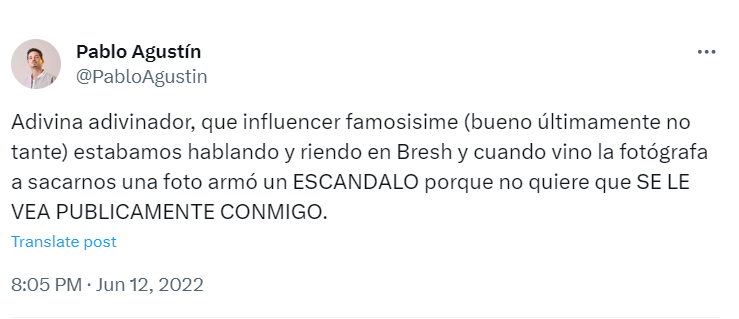
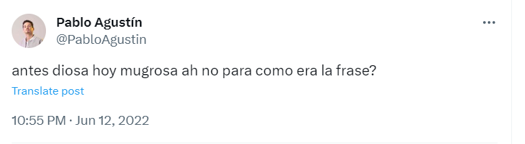
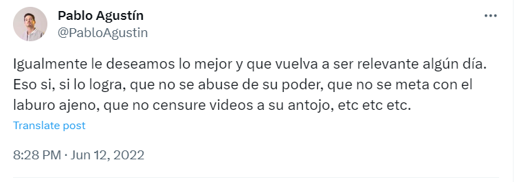

El youtuber había salido al cruce de su colega a través de las redes sociales y generó repercusiones a raíz de lo que habría sido un episodio protagonizado por ambos en la fiesta de la Bresh,
lugar en donde se encontraron y hasta habrían compartido un momento juntos aunque una actitud de la influencer podría haber desencadenado el enojo de su par quien no tuvo ningún tipo de reparo y salió a hacer pública la situación aunque decidió no dar nombres explícitamente.
En sus posteos efectuados a través de su cuenta oficial de Twitter Pablo Agustín escribió toda su verdad.
En tanto que Mica decidió contestar con un video explicando desde su perspectiva todo lo suscitado y dejando de manifiesto que hasta habría recibido la amenaza de la venganza en redes por parte del influencer.
El 10 de junio de 2022 el youtuber pablo agustin abria salido al cruce de su colega a traves de las redes sociales y habia generado repercuciones a raiz de lo que habria sido un episodio protagonizado por ambosen la fiesta de
la bresh lugar donde se encontraron y estos habian compartido un breve momento juntos aunque una actitud de la influencer podria haber desencadenado el enojo de su par quien
no tuvo ningun tipo de reparo y salió a hacer publica la situacion aunque no dio nombres explicitamente
en sus posteos afectados a traves de su cuenta oficial de twitter pablo agustin habria escrito lo siguiente:
Por ultimo, ante esto Pablo Agustin volvió a expresarse en consecuencia escribiendo lo siguiente:



Mica Suarez contestó haciendo un live en Instagram: